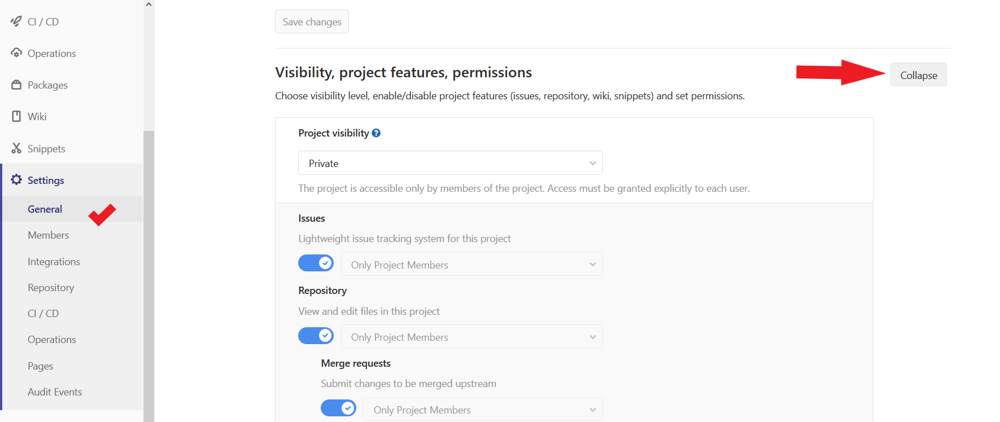
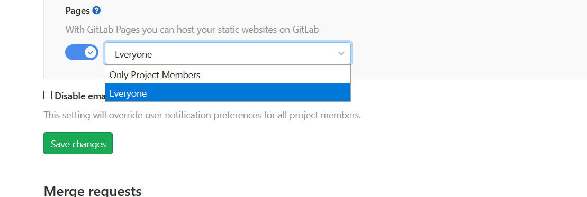

原本只是想查看看 github 跟 gitlab 的分別，發現這篇文章的介紹 為什麼我推薦hexo部署到Gitlab
以下是他說主要
主要差異：
gitlab對於自定域名仍可使用https
因為還沒有個人域名，無法測試。gitlab有ci可以自動化，不必再下
hexo g、hexo d，只要push新文章，後面一切自動化個人感覺只是將 hexo 指令換成 git 的指令，不過好處是 commit 可以寫上註解介面比github精緻
一個repo(在Gitlab上叫project)，同時呈現page及存放blog原始結構
在 github 哪邊只會上傳 public 的內容提供的容量、流量都比github大
不想公開BLOG原始結構的話，可以設定成私人(免費)
gitlab的後台提供web IDE，可以做到雲端寫作
還沒安裝web ide ，暫時無法測試。
看完之後，也想嘗試在 gitlab上面發佈。
安裝gitlab ssh key
站內文章：同一台電腦使用 gitlab跟github SSH key
我是參考這篇文章 Kenny's Blog 同一部電腦管理 Github 與 Gitlab SSH keys
建立 hexo
步驟 請參閱 文章1.hexo建立
這邊是差異性，
設定.gitignore，應該一開始就有這個檔案，不太需要設定。
如果沒有先在跟目錄底下建立 .gitignore
輸入以下內容
1 | .DS_Store |
設定.gitlab-ci.yml
1 |
|
修改 _config.yml
記得到 _config 將 repo 改成 repository: git@gitlab.com:帳號/帳號.gitlab.io.git
接下來就可以push 到gitlab上
權限問題
當你發佈到gitlab之後，如果沒有限定page權限，就必須要登入才能查看。
到 Project -> setting->General 將Visibility, project features, permissions 展開，往下拉找到 Page 這個選項
將 only Project Member(只有專案成員) 改成 Everyone(每個人)。
儲存之後，請過幾分鐘再去查看。

